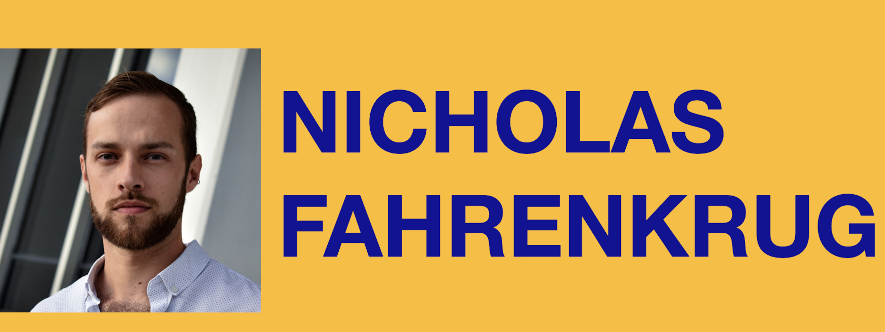

I perform new music, opera, song, early music, musical theater, cabaret, and in choral ensembles. I am especially interested in new works, Deep Listening, experimental performance and improvisation, and digital visualizations.
I am cofounder of the piano/voice duo, Apollo Duo, alongside my colleague and dear friend, pianist Eleonora Apostolidi. I enjoy producing and exploring experimental visualizations set to music.
LAFFONT COMPETITION | December 17, 2023 | Jordan Hall, New England Conservatory, Boston, MA
Nick Fahrenkrug competes in the Boston District of the Metropolitan Opera's Laffont Competition.
JOURNEY OF SEASONS | November 16, 2023 David Friend Recital Hall, Berklee College of Music, Boston, MA | November 18, 2023 York Public Library, York, ME
Nick Fahrenkrug joins Nightingale Vocal Ensemble performing as the Baritone soloist in Andrew List’s vocal quartet, clarinet, and piano cycle titled Journey of Seasons.
Nightingale will perform the Massachusetts and Maine premieres of Andrew List's vocal quartet, clarinet, and piano cycle titled "Journey of Seasons." Featuring poetry by Queer, Belgian-American writer, May Sarton, "Journey of Seasons" uses the image of a garden as a metaphor for the self amidst life's seasons. In tandem with the performance, we will invite a modern poetry scholar to present on Sarton and her impact on 20th century American literature.
INAUGURAL PATRICIA CRUMP VOCAL COMPETITION | November 4, 2023 | The Florentine Opera Lueders Opera Center, Milwaukee, WI
Nick Fahrenkrug competes as a finalist in the Inaugural Patricia Crump Vocal Competition.
WHISPERS: ECHOES FROM THE HALLS | October 7 - 8, 2023 | Shirley-Eustis House, Boston, MA
Nick Fahrenkrug joins Boston Opera Collaborative in the role of 'The Man' in their immersive horror opera experience.
“This 45-minute operatic experience will immerse you in a story of betrayal, murder, and mystery. Weaving together some of opera’s most chilling moments in a brand new narrative, Whispers: Echoes from the Halls is sure to leave you primed for the Halloween season. Our story, woven together with music from operas like Don Giovanni, Turn of the Screw, Salome, Lucia di Lammermoor, and more, will tell a spooky murder-mystery narrative about a condemned man, who did it, and why. Unique in its presentation and leaning heavily into the spookiness of the venue, Whispers: Echoes from the Halls is sure to excite audiences.”
THE CASK OF AMONTILLADO | September 21, 23, 2023 | Old North Church, Boston, MA
Nick Fahrenkrug joins Nightingale Vocal Ensemble as Audio Visual Producer and Ensemble Member for The Cask of Amontillado.
“A choral dramatization of Boston-born author Edgar Allan Poe’s short story The Cask of Amontillado, featuring the music of Carlo Gesualdo. Most infamous for murdering his wife and her lover (and well known for his dissonant Italian Renaissance polyphonic music), Gesualdo pairs perfectly with the macabre writing for which Poe is most famous. This semi-staged production is directed by Angela Yam (ADRIFT) and features Nathan Halbur as the narrator, Montresor.”
AVIAN MENAGERIE | August 5, 2023 Cathedral Church of St. Paul, Boston, MA | August 6, 2023 Salisbury Congregational Church, Salisbury, VT
Nick Fahrenkrug joins Nightingale Vocal Ensemble for their 5th Anniversary album project, Avian Menagerie.
“Avian Menagerie is a carefully curated concert program selected from dozens of pieces created especially for the ensemble by its resident composers, representing some of the best original music that Nightingale has performed to date. This playful, profound, whimsical, and poignant collection of new choral music will be performed by 16 virtuoso singers a cappella.”
ADRIFT at the Emily Dickinson International Society | July 22-23, 2023 | Emily Dickinson Museum, Amherst, MA
Nick Fahrenkrug joins Nightingale Vocal Ensemble in their first reprise of ADRIFT.
“After the widely successful world premiere in March of ADRIFT, our original choral opera based on the works of Emily Dickinson, Nightingale has been invited to perform the work again at the Emily Dickinson International Society's annual meeting in Amherst, MA.”
ADRIFT | March 18, 19, 2023 | BCA Plaza Black Box, Boston, MA
Nick Fahrenkrug joins Nightingale Vocal Ensemble in ADRIFT.
“A first-of-its-kind staged choral opera, ADRIFT tells a love story through the words of queer New Englander Emily Dickinson. Featuring entirely new musical settings by Nightingale resident composers, and under the direction of Angela Yam, this hour-long theatrical experience brings to life a carefully curated selection from Dickinson’s nearly 2,000 poems. The members of Nightingale Vocal Ensemble will use all of their compositional, vocal, and dramatic capabilities to celebrate—and expand—the unique capacity for an ensemble to tell a story.”
Awarded by the American Prize in Opera Performance for my art film “Dichterliebe: Within and Without” in 2021, this guerilla style video cycle was inspired by the earliest days of the COVID-19 outbreak.
I was unsatisfied with the idea of performing a degree recital to an empty room. The time, if you can imagine it, was before livestreaming was common practice. I wanted to create a space where my audience could interact with the piece without feeling that “it would’ve been better in person.” This project was the first time I ever worked with the digital medium and I am eager to produce more with it.
Enjoy this sneak peek at my newest collaboration with Nightingale Vocal Ensemble. I’m working on creating an art film version of their most recent live production, The Cask of Amontillado. Carlo Gesualdo’s Madrigali a cinque voci, Libro sesto set to Edgar Allan Poe’s The Cask of Amontillado. Stay tuned for future installments!
| nfahrenkrugbaritone@gmail.com |
| SOCIAL: |